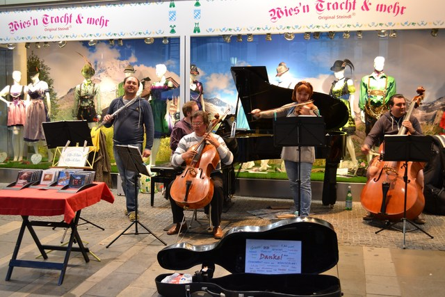

コロナ明け4年ぶりのミュンヘン。何もかもが懐かしかった。ドイツパンを自宅で焼き続けた4年間。自分で焼く味と本場の味を再確認するような旅だった。
旧市街にオープンしたJulius Brantnerというオーガニック系のドイツパン屋さん。ここのライ麦パン本当に美味しいです。これまで食べたライ麦パンでトップクラス。どうやって発酵させたらこんな深みのある複雑な味を出せるのか。
日曜日は吹雪に見舞われた。 夜が明け一面の銀世界に包まれた早朝のニンフェンブルク城。清冽な空気が張りつめている。
新市庁舎の後ろ、ダルマイヤの隣の建物の1階にあるManufactum brotのライ麦カンパーニュ。 この頑固なクラストとクープの入り方はもはや芸術作品だと思う。
市街地から路面電車で20分ほど、ミュンヘン郊外のニンフェンブルク城の夕暮れ。
オフィスのハロウィンイベントで掘ったV8パンプキン（3年め）。
イングリッシュガーデンの紅葉。 落葉がカタカタと音を立てながら石畳を転がっていく。 何もかもが透き通ってしまいそうな、晩秋のバイエルンの夕暮れ。
ドイツパン。ミュンヘンいちばんのおすすめは、Rischartのドイツパン。 ここのドイツパンを自宅で焼いて再現するのがぼくの夢だ。
このパンは、「パン・パイアス」という（正確にはこの写真のパンは「パン・パイアス・デュンケル」といって、 小麦胚芽を多く混ぜて、通常の「パン・パイアス」より黒みと小麦の風味を出してあるもの）。 スイスのパン屋が伝統的なバゲットを追求して生み出したパンで、 そのあまりのおいしさにドイツやフランスにも広まっていった。 正式には、「パン・パイアス」という製品名は、 そのスイスのパン屋の販売する粉を使ったパンにしか付けてはいけないようだが、 類似のパンはいたるところで売られている。 特徴的なのは、加水率の高さ、（加水率の高さゆえまともに成形できないので）全体を大胆にひねった成形、 打粉に片栗粉を使うこと、などなど。 ぼくが家で再現したくて修行しているパンのひとつだ。
オフィスのハロウィンイベントで掘ったV8パンプキン（2年め）。 ふたを捨ててはいけないことを覚えた。
レジデンツの前の庭園の紅葉。
オフィスのハロウィンイベントで掘ったV8パンプキン。 ふたを取っておかないといけないとは知らずに捨ててしまった。
レジデンツの前の庭園の紅葉。
聖ペーター教会の塔のてっぺんからの眺め。
2015年の冬まで、ミュンヘンのGoogleオフィスはマリエン広場の新市庁舎の裏手にあった。 旧市街のど真ん中、最高のロケーションだ。 オフィスの建物を出たところの風景はこんな感じ。 旧市街の建築制限を受けるので、屋根が低く、V8のチームはその屋根裏スペースで開発を行っていた。 カフェも狭い。でも、ぼくはこのオフィスが大好きだった。
冬のミュンヘン。イルミネーションがとてもきれい。
冬の間だけカールス広場に設置されるスケートリンク。
ミュンヘンの街並み。

聖フラウエン教会の壁に飾られている石板。
ミュンヘンの街は音楽に満ちている。 路上でヴァイオリン、アコーディオン、ピアノを演奏している人たちがたくさんいるのだ。 オフィスからホテルに帰るとき、立ち止まって音楽を聴くのが大好きだ。 そのなかでも、飛び抜けて上手なのがこちらの方々。 2012年4月にはじめて見かけて以来、もう16回以上ミュンヘンを訪れたが、毎回この人たちを探して音楽を聴いている。 あれから5年以上が経った今でも、ずっと演奏を続けてくださっている（メンバーは少し変わっている）。 最近は、金曜の夜7時前後、土曜の夜6時前後、日曜の夜6時前後に、 マリエン広場とカールス広場を結ぶ通りのどこかで演奏活動をされていることが多いように思う （なので、毎回その時間に合わせてオフィスを出て、この人たちを探しに行く）。 この音楽を聴きながら、ぼくはいろんなことを考えてきた。
